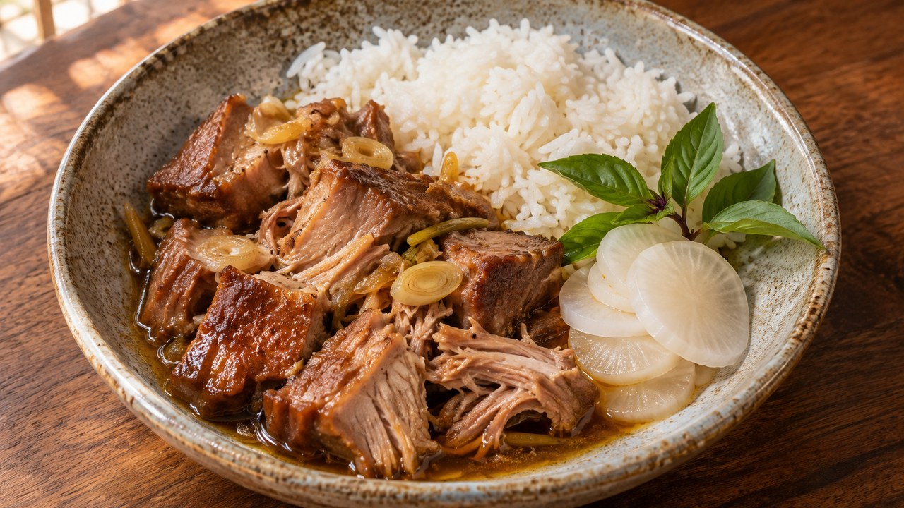

Vietnamese-inspired · Dinner · Serves 3 · About 125 minutes
Lemongrass-Braised Pork Blade Steak with Pickled Daikon

Ingredient amounts are estimates when scaled. AnyList imports the original quantities.
Ingredients
- 1 1/2 lb bone-in pork blade steaks
- 1 Tbsp neutral oil
- 2 lemongrass stalks, trimmed and smashed
- 3 garlic cloves, smashed
- 1 cup low-sodium chicken broth, plus more as needed
- 1 Tbsp fish sauce
- 2 tsp brown sugar
- 1 cup jasmine rice
- 1 cup thinly sliced daikon
- 1/4 cup rice vinegar
- 1/4 cup water
- 1 Tbsp sugar
- 1/2 tsp kosher salt, plus more for the pork
- 1/4 cup Thai basil leaves
- 8 oz sugar snap peas, trimmed
- 1 tsp neutral oil for the snap peas
- 1 garlic clove, minced for the snap peas
- 1 Tbsp fresh lime juice
- 1 pinch kosher salt for the snap peas
Instructions
- Heat the oven to 325°F. Pat the pork dry and season lightly with kosher salt. Heat the oil in an oven-safe skillet or Dutch oven and brown the whole blade steaks on both sides.
- Add the smashed lemongrass, garlic, broth, fish sauce, and brown sugar. Bring to a simmer, cover, and transfer to the oven. Start checking at 90 minutes and braise until a fork twists easily in the meat. Add a splash of broth if the pan is getting dry.
- For the daikon, stir the rice vinegar, water, sugar, and 1/2 tsp kosher salt until dissolved. Toss with the daikon, cover, and refrigerate for at least 30 minutes.
- Cook the jasmine rice according to its package directions. Remove the blade bones and discard the lemongrass. Pull the pork into chunks and spoon the braising liquid over the pork and rice. Serve with the drained daikon and torn Thai basil.
- For the lime-garlic snap peas, heat the oil in a skillet over medium-high heat. Sauté the peas for 3–4 minutes. Add the garlic for the last 30 seconds, then toss with the lime juice and salt.